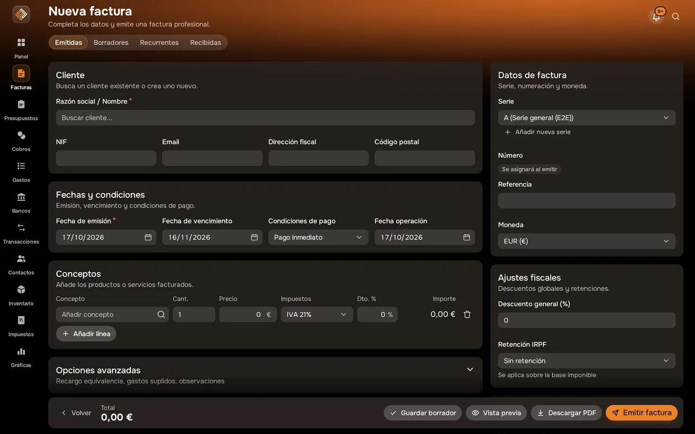
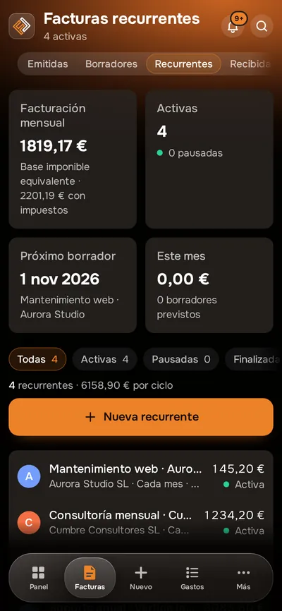

Facturación
Facturas correctas a la primera, listas para VERI*FACTU.
Emite facturas con tus series, tus impuestos y tu marca. Guárdalas como borrador, revisa la vista previa en PDF y envíalas por correo sin salir de Facturales.


Captura real de Facturales con datos de ejemplo.
Así se ve en la app
La ficha de cada facturaEstado, líneas, cobro y acciones sin salir de la lista.

Emitir es rellenar y revisarCliente, líneas, impuestos y retenciones, con la vista previa del PDF.

Facturas recurrentes Nuevo
Lo que facturas cada mes, preparado solo.
Convierte cualquier factura en recurrente, elige cada cuánto se repite y cuándo termina. Cada periodo Facturales deja el borrador listo con las fechas nuevas y te avisa: tú lo revisas y lo emites, de uno en uno o todos a la vez.
- Semanal, mensual, bimestral, trimestral, semestral o anual
- Termina en una fecha, tras un número de facturas o nunca
- Vista previa de las próximas fechas y días de vencimiento
- Pausa, reanuda o genera la del periodo cuando quieras
Las facturas se emiten siempre con tu confirmación, con su numeración correlativa y su registro VERI*FACTU.


Qué puedes hacer
Facturas recurrentes
Cuotas, igualas y suscripciones: elige la periodicidad y Facturales prepara cada factura como borrador listo para emitir, y te avisa.
Recordatorios automáticos
Avisos de cobro por correo antes y después del vencimiento, con tu mensaje. Pausables en cada factura.
Emisión y borradores
Elige o crea el cliente al vuelo, añade productos del catálogo y guarda como borrador hasta que esté lista.
Impuestos y retenciones
IVA (21, 10, 4 y 0 %), IGIC, IPSI y operaciones exentas, con retención de IRPF por línea o sobre el total.
Series correlativas
Series para facturas, presupuestos y rectificativas, con numeración correlativa y sin saltos ni duplicados.
VERI*FACTU
Cada factura emitida genera su registro con huella encadenada y lleva el código QR de cotejo.
Envío por correo
Envía la factura con el PDF adjunto o programa el envío para una fecha y hora.
Facturae 3.2.2
Descarga la factura en el formato estructurado que admite la Administración (FACe).
Rectificativas
Una factura emitida no se borra: se rectifica, y ambas quedan vinculadas en tus impuestos.
Importación y recibidas
Importa tus facturas existentes y registra las facturas que recibes de tus proveedores.
Plantillas y marca
Vista previa en PDF con tu logotipo, tu plantilla y tu color de marca.
Cómo funciona
Configura tus datos
Datos fiscales, logotipo, color y series. Solo la primera vez.
Emite
Cliente, líneas, impuestos y retenciones. La vista previa te enseña el PDF tal cual.
Envía y cobra
Mándala por correo y sigue su cobro desde Cobros o desde el banco.
Preguntas frecuentes
¿Puedo programar facturas recurrentes?
Sí. Desde cualquier factura eliges «Hacer recurrente» y fijas la periodicidad (semanal, mensual, trimestral, semestral o anual), la fecha de inicio y cuándo termina. Cada periodo Facturales genera automáticamente el borrador con las fechas actualizadas y te avisa; tú lo revisas y lo emites con un clic, así cada factura conserva su numeración y su registro VERI*FACTU.
¿Puedo editar una factura emitida?
No: para preservar la integridad fiscal, una factura emitida no se edita ni se borra. Si hay un error, emites una factura rectificativa desde el detalle de la original.
¿Cómo queda registrada cada factura en VERI*FACTU?
Cada factura emitida genera su registro VERI*FACTU con huella encadenada y QR. El estado de los registros se consulta en Ajustes › VERI*FACTU.
¿Puedo programar el envío?
Sí. En el último paso de la emisión eliges «Programar envío» con destinatario, asunto, mensaje, fecha y hora, y consultas después si se envió.
¿Qué impuestos admite?
IVA peninsular y de Baleares, IGIC canario, IPSI de Ceuta y Melilla y operaciones exentas, además de retenciones de IRPF.
Pon orden en tus finanzas esta semana
Crea tu cuenta, emite tu primera factura e importa tu primer extracto. Tienes 14 días de prueba en cualquier plan y puedes cancelar cuando quieras.